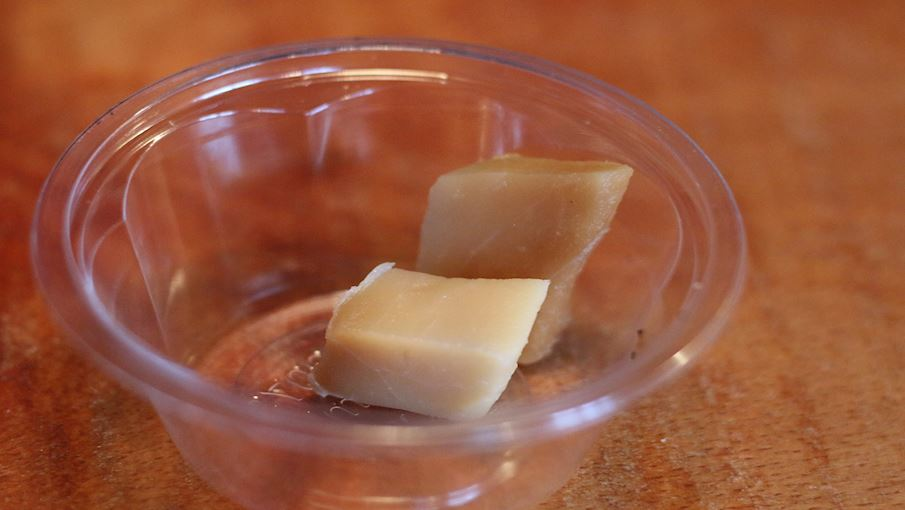

Hakarl

Hakarl is a traditional Icelandic dish made from fermented shark meat. The shark is typically the Greenland shark, which has a high content of urea and trimethylamine oxide, making the meat toxic if consumed fresh. The fermentation process helps to break down the toxins and preserve the meat. The flavor of hakarl is quite strong and pungent, and it is often described as an acquired taste.
Ingredients:
- 1 lb shark meat (Greenland shark, available at specialty markets or online)
- 2-3 tbsp sea salt
- Cheesecloth or muslin cloth
- Gravel or stones
- Wooden boards or a plastic container with a lid
- A well-ventilated area or an outdoor space for fermenting
Steps:
- Cut the shark meat into large pieces and remove the skin and any bones.
- Rub the meat with sea salt and let it sit for 12-16 hours.
- Rinse the meat thoroughly with cold water to remove the salt.
- Cut the meat into smaller pieces and wrap them in cheesecloth or muslin cloth.
- Bury the wrapped meat in gravel or stones in a wooden board or plastic container. Make sure that the container is tightly sealed or covered with a lid.
- Leave the container in a well-ventilated area or an outdoor space for 6-12 weeks, depending on your preference for the strength of the flavor.
- Unwrap the meat and remove any remaining skin or bones. Cut the meat into smaller pieces and serve.